A comprehensive benchmark for evaluating LLM agents on real-world materials science software — spanning GUI tools, scientific code APIs, and data-retrieval interfaces.
一个用于评估大语言模型智能体在真实材料科学软件上表现的综合基准， 涵盖图形界面工具、科学代码接口和数据检索平台。
MatToolBench evaluates AI agents on real-world tasks across professional materials characterization and analysis software. It covers three agent types — GUI Agent (visual interaction), Origin Agent (script-based analysis), and Code Agent (programmatic database queries) — running inside a Windows 11 virtual machine environment powered by Docker & QEMU.
MatToolBench 在专业材料表征与分析软件上评估 AI 智能体的真实世界任务表现。 涵盖三种智能体类型：GUI Agent（视觉交互）、Origin Agent （脚本分析）和 Code Agent（代码数据库查询）， 均运行于 Docker & QEMU 驱动的 Windows 11 虚拟机环境中。
Visually navigates materials software GUIs (Jade, Avantage, VESTA, DM, MatStudio) to complete characterization analysis tasks via screenshots and planned actions.
通过截图与动作规划，视觉操作材料科学软件 GUI（Jade、Avantage、VESTA、DM、MatStudio）完成分析任务。
~100 tasksWrites OriginPro scripts to process experimental data (XRD, XPS, Raman, Cycle, Step, CE) and generate publication-quality plots automatically.
编写 OriginPro 脚本处理实验数据（XRD、XPS、拉曼、循环曲线等）并自动生成图表。
~16 tasksGenerates Python code to query materials databases (MP, OQMD, PyMatgen, OPTIMADE) and retrieve structural and thermodynamic properties.
生成 Python 代码查询材料数据库（MP、OQMD、PyMatgen、OPTIMADE），检索结构与热力学性质。
~70 tasksSee how LLM agents navigate professional materials science software, write analysis scripts, and query scientific databases to complete complex real-world tasks. ⚡ Sped up
观看 LLM 智能体如何操作专业材料科学软件、编写分析脚本， 并查询科学数据库来完成复杂的真实世界任务。 ⚡ 视频已加速
MatToolBench comprises 204 tasks across 11 domains and 3 agent types. GUI tasks span 5 professional software tools and are graded by sub-criteria count — Easy (1–3 pts), Medium (4 pts), Hard (≥5 pts). Origin tasks cover 6 plot types (XRD, XPS, Raman, FTIR, Battery Cycling, Free Energy) with no difficulty split. Code tasks evaluate multi-property database queries across MP, OQMD, OPTIMADE, and Pymatgen.
MatToolBench 共包含 204 个任务，覆盖 11 个领域和 3 种智能体类型。 GUI 任务跨越 5 款专业软件工具，按子标准数量分级：简单（1–3 分）、中等（4 分）、困难（≥5 分）。 Origin 任务涵盖 6 种图表类型（XRD、XPS、拉曼、FTIR、电化学循环、自由能），无难度区分。 Code 任务评测 MP、OQMD、OPTIMADE 和 Pymatgen 的多属性数据库查询。
| Category类别 | Domain领域 | #Tasks任务数 | E / M / H | Avg Pts均分 | Total Pts总分 |
|---|---|---|---|---|---|
| GUI图形界面 | Avantage | 20 | 14 / 2 / 4 | 3.25 | 65 |
| DM | 20 | 13 / 5 / 2 | 3.35 | 67 | |
| JADE | 20 | 15 / 5 / 0 | 2.95 | 59 | |
| MS | 20 | 6 / 11 / 3 | 4.10 | 82 | |
| VESTA | 20 | 13 / 2 / 5 | 3.45 | 69 | |
| Origin绘图 | Origin | 16 | — | 2.00 | 32 |
| Code代码查询 | MP OQMD OPTIMADE Pymatgen | 80 | — | 1 | 80 |
| Mixed混合 | Mixed | 8 | — | — | — |
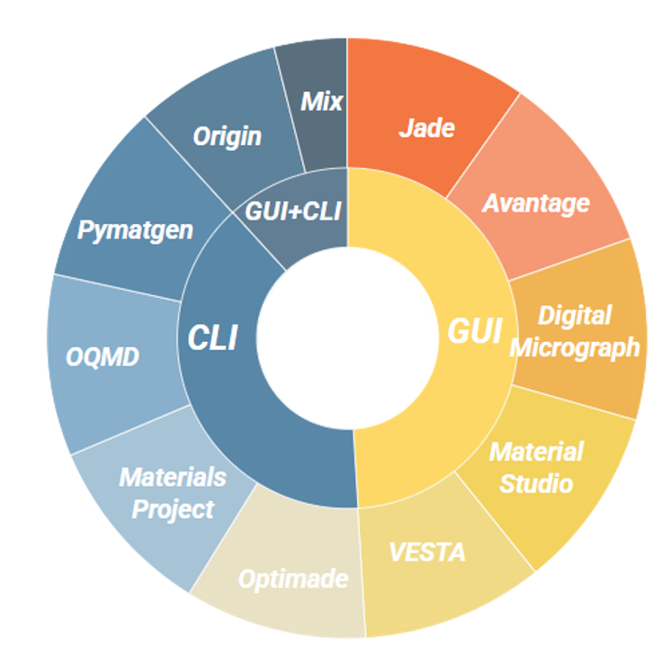
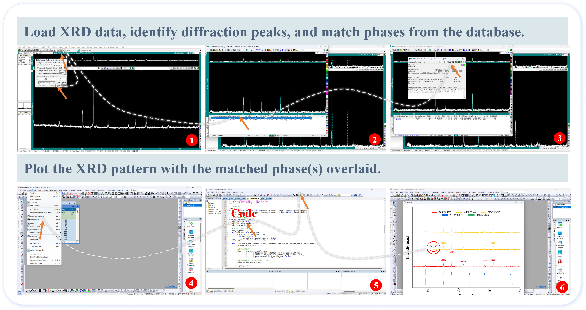
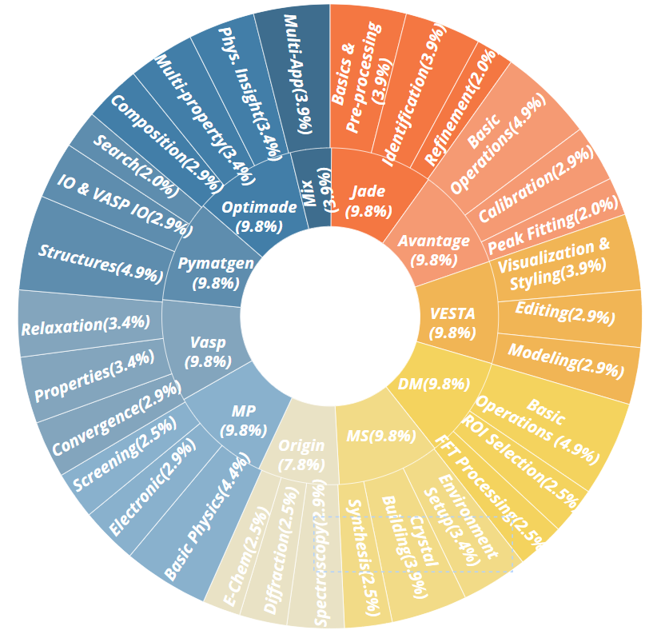
Tasks span a wide range of materials science workflows, from crystal structure visualization and XRD/XPS spectral analysis to database queries for thermodynamic properties. Each task is graded by domain-specific sub-criteria, enabling fine-grained evaluation beyond simple pass/fail.
任务覆盖材料科学的多种工作流程，从晶体结构可视化、XRD/XPS 谱图分析， 到热力学性质的数据库查询。每个任务按领域特定子标准进行评分， 支持超越简单通过/失败的细粒度评估。
Browse human-recorded reference trajectories for selected GUI tasks across five materials science tools. Each step captures the correct desktop action sequence for completing the instruction, serving as the ground-truth basis for automated evaluation accuracy.
浏览五款材料科学软件上选定 GUI 任务的人类示范操作轨迹。 每一步均记录完成该指令的正确桌面操作序列，作为自动化评测准确率校验的标准参照。
The complete reference trajectory dataset — 100 human-recorded GUI instruction trajectories across five materials science tools — is available on Google Drive.
完整参考轨迹数据集（五款材料科学软件共 100 条人类 GUI 操作指令轨迹）已托管于 Google Drive。
Download on Google Drive 在 Google Drive 下载Tasks are loaded from JSON config files and dispatched to one of three agent pipelines. Each agent interacts with a Windows 11 VM (via QEMU inside Docker) or an external database API, and results are evaluated by domain-specific getters and metrics.
任务从 JSON 配置文件加载，分发到三种智能体流水线之一。 每个智能体通过 QEMU（Docker 内）与 Windows 11 虚拟机或外部数据库 API 交互， 结果由特定领域的 getter 和评分指标进行评估。
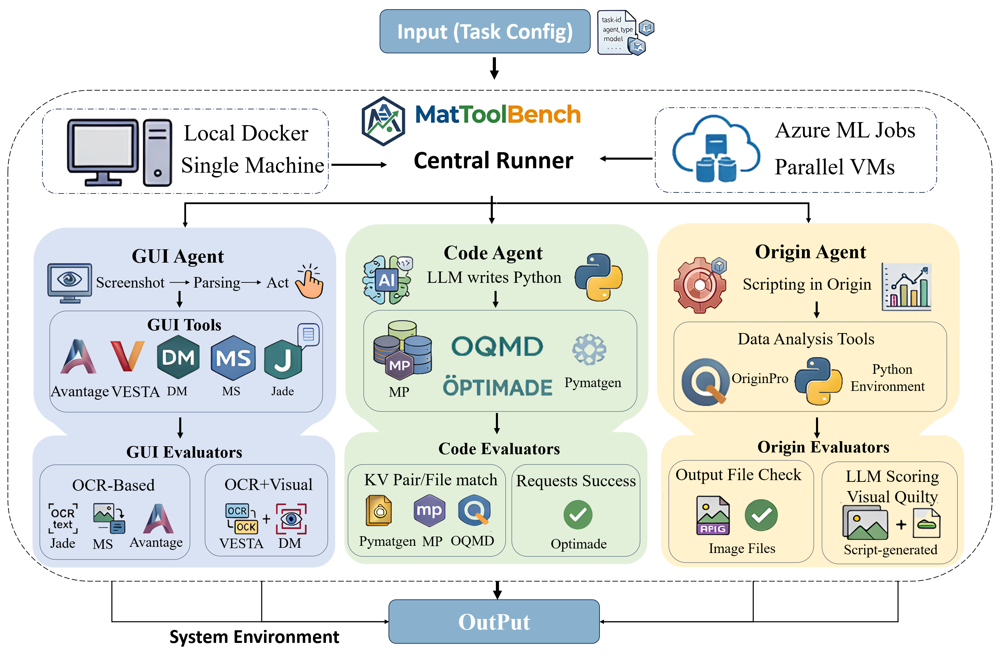
Each domain uses a tailored combination of metric functions. GUI domains rely on
exact_match with specialized getter functions; Code domains use
partial-credit matching (detect_kv_match) or binary file comparison
(detect_file_match).
每个领域使用定制化的评测指标组合。GUI 领域使用 exact_match 配合专用 getter 函数；
Code 领域使用部分分匹配（detect_kv_match）或二进制文件比对（detect_file_match）。
| Domain领域 | exact_match |
detect_kv |
detect_file |
|---|---|---|---|
|
GUI + Origin
Avantage · DM · JADE
MS · VESTA · Origin |
✓ | — | — |
| OPTIMADE | ✓ | — | — |
| MP | — | 14/20 | 6/20 |
| OQMD | — | ✓ | — |
| Pymatgen | — | — | ✓ |
| Domain领域 | #Getter Types种类数 |
|---|---|
| Avantage | 6 |
| DM | 6 |
| JADE | 8 |
| MS | 5 |
| VESTA | 8 |
| Origin | 2 |
Score: normalized task score averaged over sub-criteria. SR (%): success rate (all sub-criteria satisfied).
Score：子标准归一化平均得分。 SR (%)：成功率（所有子标准均满足）。
| Model | 模型 | Overall | 总平均 | GUI Agent | Origin Agent | Code Agent | |||||||||
|---|---|---|---|---|---|---|---|---|---|---|---|---|---|---|---|
| Avg | 均值 | Avantage | JADE | DM | MS | VESTA | Avg | Origin | Pymatgen | MP | OQMD | OPTIMADE | Avg | ||
Steps: mean steps across all episodes (max 50, lower = better). Steps*: mean steps on successful episodes only. FTR (%): false termination rate (lower = better).
步数：所有回合平均步数（满分50步，越少越高效）。 步数*：仅成功回合平均步数。 FTR：错误终止率（越低越好）。
| Model | 模型 | Overall | 总平均 | GUI Agent | Origin Agent | Code Agent | |||||||||
|---|---|---|---|---|---|---|---|---|---|---|---|---|---|---|---|
| Avg | 均值 | Avantage | JADE | DM | MS | VESTA | Avg | Origin | Pymatgen | MP | OQMD | OPTIMADE | Avg | ||
| Task Type | Parameter | Value | Condition | Template Script | Workflow Hint | Env Setup† | Injected Content |
|---|---|---|---|---|---|---|---|
| GUI | gui_hint_mode |
hint |
full | — | ✓ | — | GUI workflow instructions |
no_hint |
baseline | — | ✗ | — | generic agent guidelines only | ||
| Code | code_hint_mode |
hint |
full | — | ✓ | — | API usage examples & docs |
no_hint |
baseline | — | ✗ | — | generic agent guidelines only | ||
| Origin | origin_mode ×origin_hint_mode |
script + hint |
full | ✓ | ✓ | ✓ | domain template + OriginLab workflow |
no_script + hint |
partial | ✗ | ✓ | ✓ | OriginLab workflow only | ||
no_script + no_hint |
baseline | ✗ | ✗ | ✗ | generic agent guidelines only |
† Env Setup: whether the task environment pre-opens Code Builder (Alt+4) before the episode begins. In no_hint mode this step is suppressed so the agent must independently discover the workflow tool, providing a clean baseline.
| 任务类型 | 参数 | 取值 | 条件 | 模板脚本 | 工作流提示 | 环境初始化† | 注入内容 |
|---|---|---|---|---|---|---|---|
| GUI | gui_hint_mode |
hint |
完整 | — | ✓ | — | GUI 工作流指令 |
no_hint |
基线 | — | ✗ | — | 仅通用 Agent 指令 | ||
| Code | code_hint_mode |
hint |
完整 | — | ✓ | — | API 使用示例与文档 |
no_hint |
基线 | — | ✗ | — | 仅通用 Agent 指令 | ||
| Origin | origin_mode ×origin_hint_mode |
script + hint |
完整 | ✓ | ✓ | ✓ | 领域模板脚本 + OriginLab 工作流 |
no_script + hint |
部分 | ✗ | ✓ | ✓ | 仅 OriginLab 工作流提示 | ||
no_script + no_hint |
基线 | ✗ | ✗ | ✗ | 仅通用 Agent 指令 |
† 环境初始化：任务开始前是否通过 setup 脚本自动打开 Code Builder（Alt+4）。在 no_hint 模式下该步骤被跳过，Agent 需从 Origin 主界面独立发现操作工具，从而构成干净的基线对照。
Automated evaluation scripts independently verify every numerical extraction and software-operation judgment. We report Accuracy, Precision, Recall, and F1 for both the Score (numerical value correctness) and Software (operation identification) dimensions.
自动化评测脚本对每项数值提取及软件操作识别进行独立验证， 分别从 数值得分（Score）和软件操作（Software）两个维度报告 准确率、精确率、召回率及 F1。
Macro-averaged across all 20 tasks per software.
每款软件 20 个任务的宏平均值。
| Software | Score | Software | ||||||
|---|---|---|---|---|---|---|---|---|
| — | Acc. | Prec. | Rec. | F1 | Acc. | Prec. | Rec. | F1 |
| JADE | 1.00 | 1.00 | 0.99 | 0.99 | 1.00 | 1.00 | 1.00 | 1.00 |
| MS | 1.00 | 0.99 | 1.00 | 0.99 | 1.00 | 1.00 | 1.00 | 1.00 |
| Avantage | 0.99 | 0.98 | 0.98 | 0.98 | 1.00 | 0.98 | 1.00 | 0.99 |
| VESTA | 0.98 | 0.94 | 0.99 | 0.97 | 0.99 | 0.94 | 1.00 | 0.97 |
A curated stream of representative materials-science plots processed in Origin, spanning diffraction, spectroscopy, electrochemistry, thermal analysis, and energy-profile visualization.
精选展示使用 Origin 处理的代表性材料科学图谱，涵盖衍射、光谱、电化学、热分析与能量示意等多种类型。
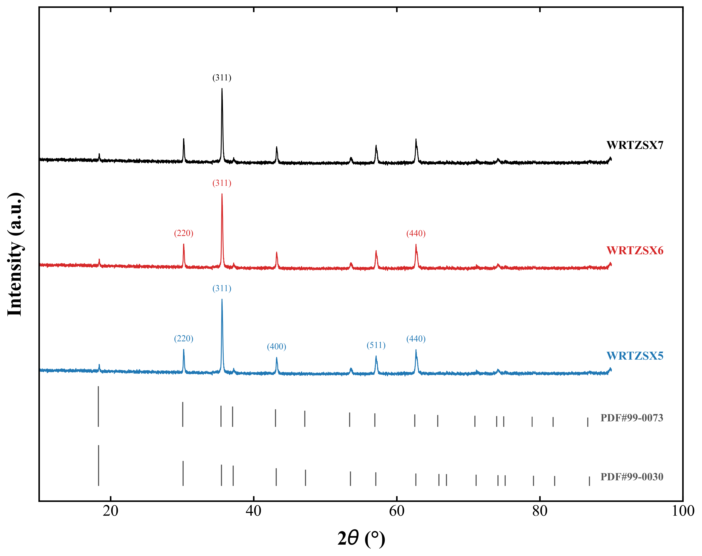
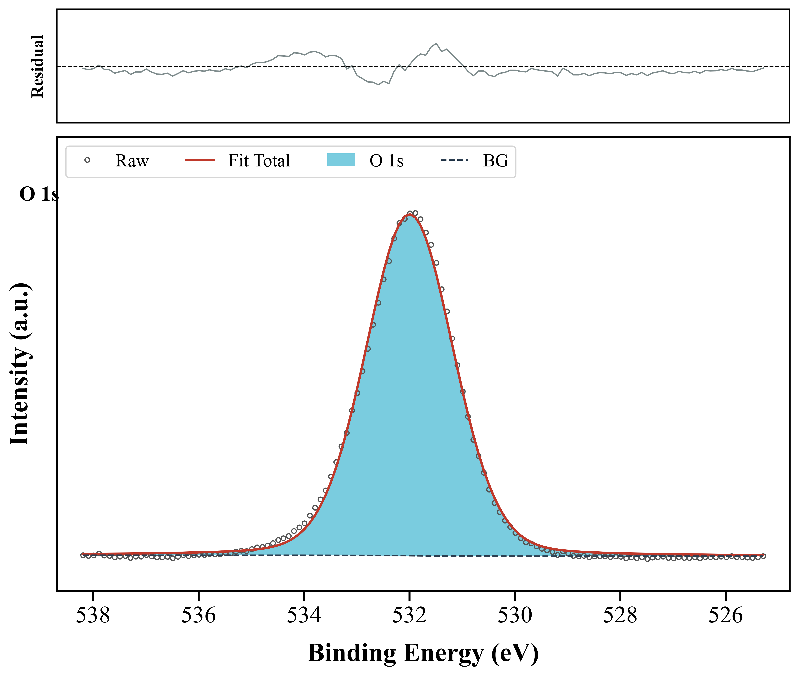
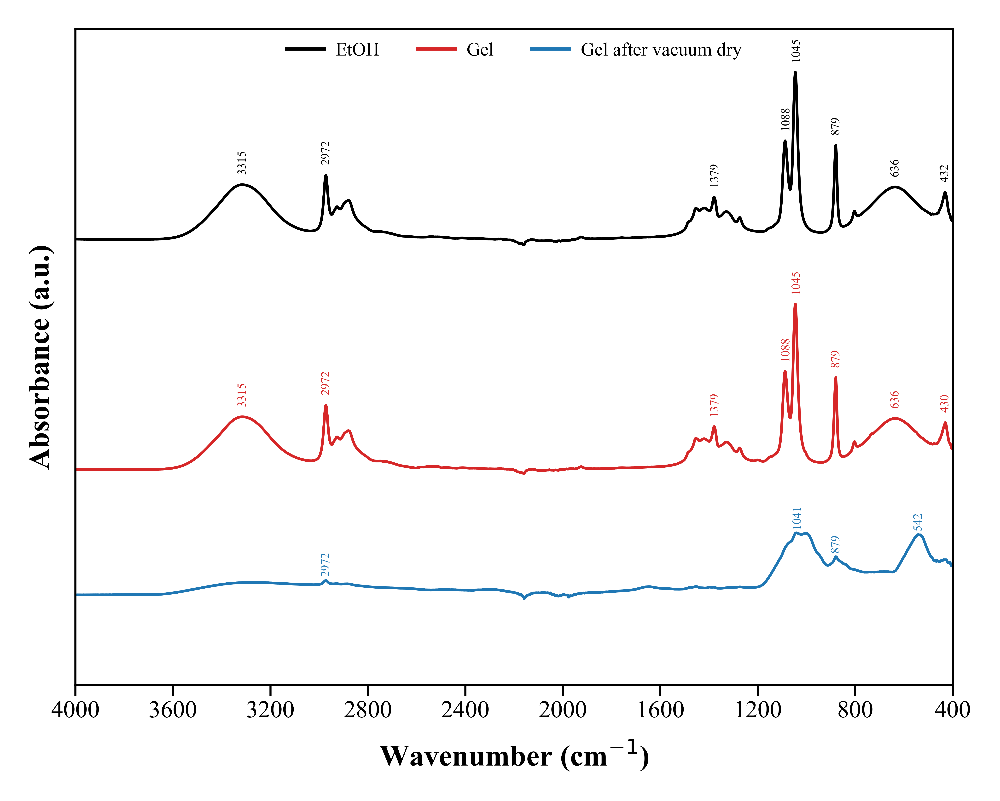
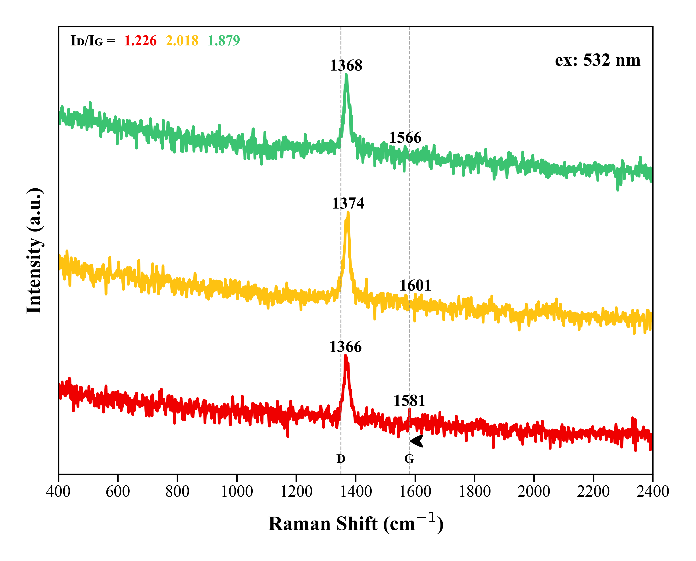
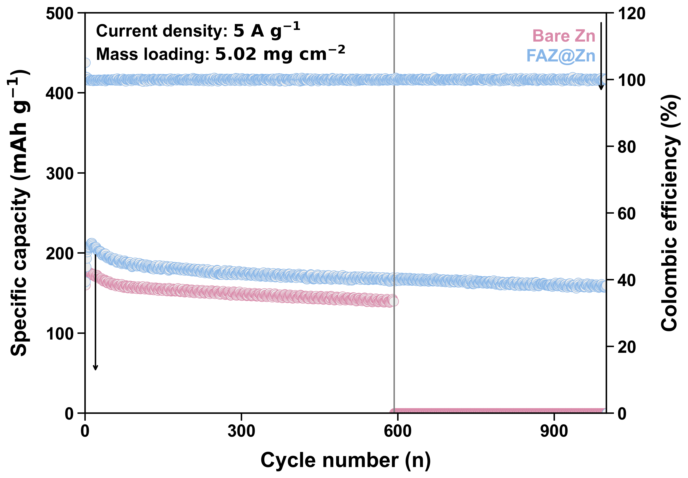
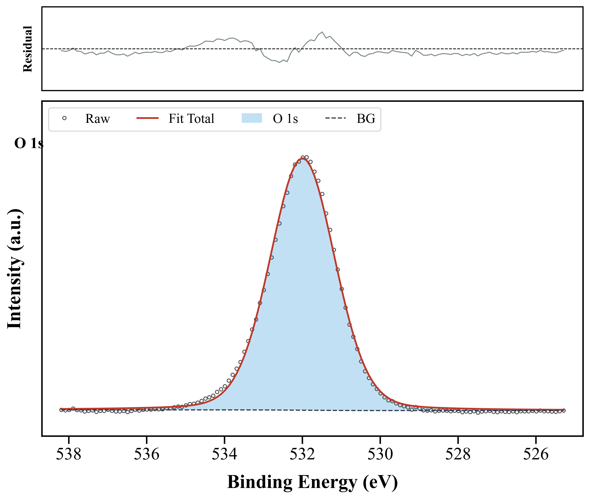
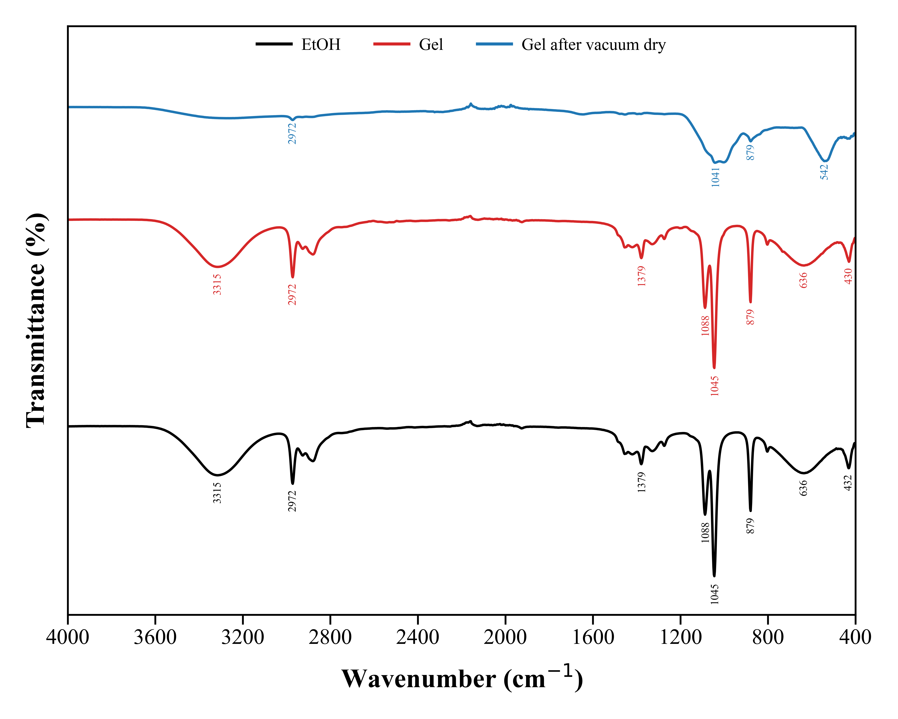
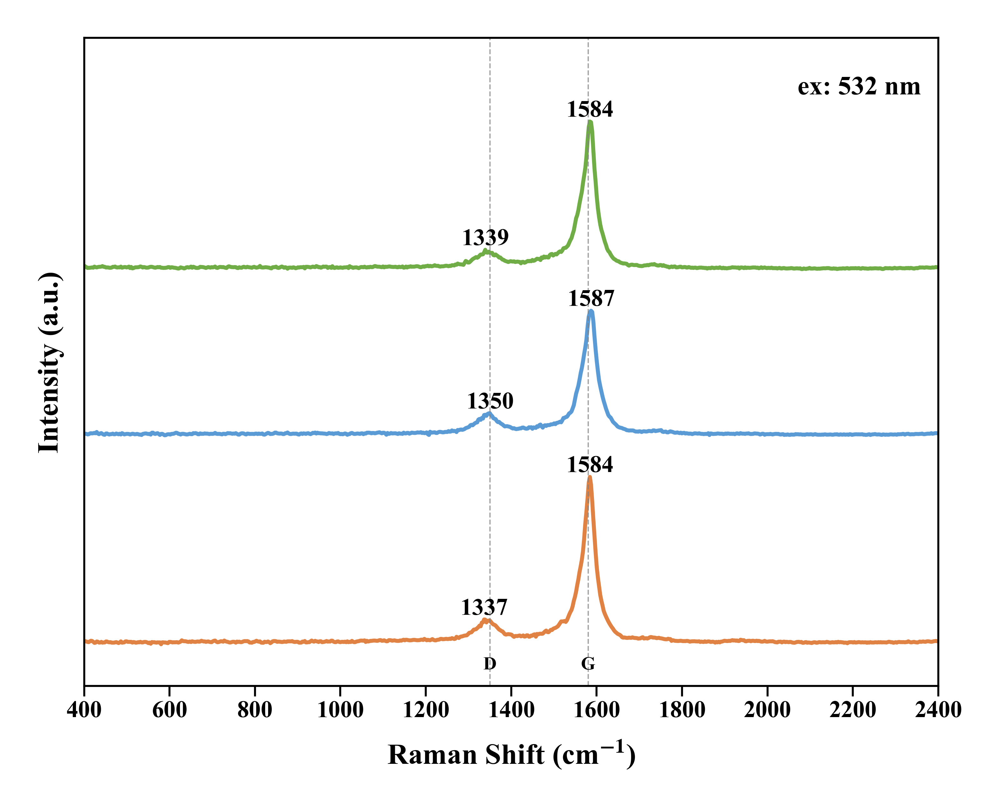
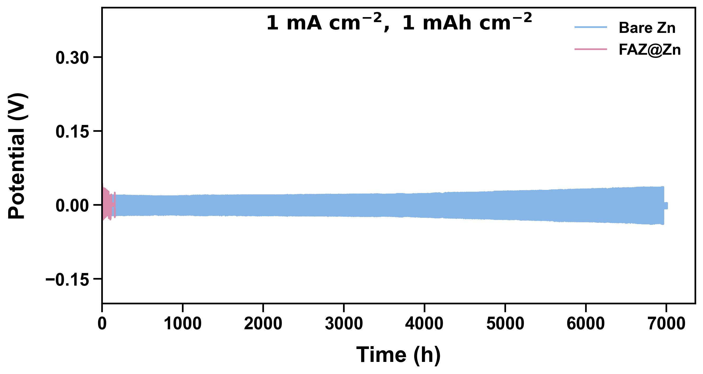
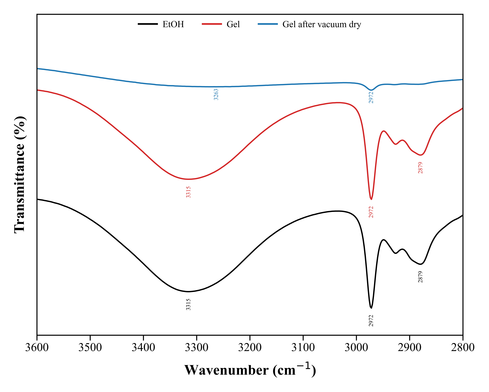
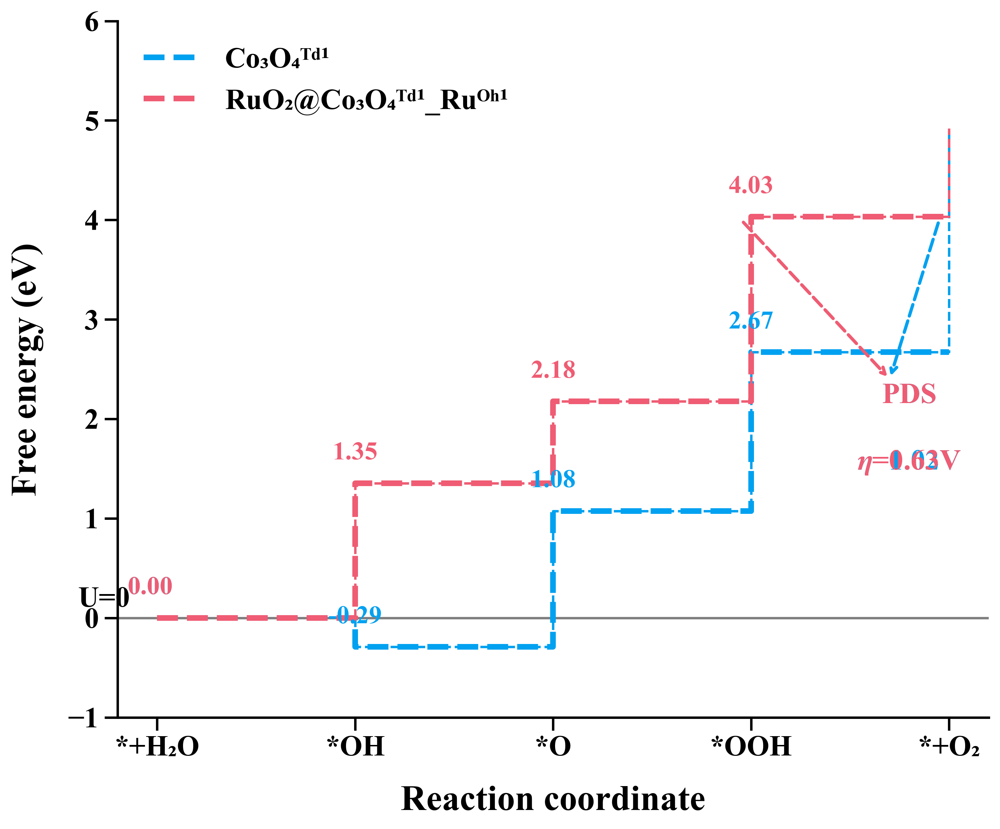
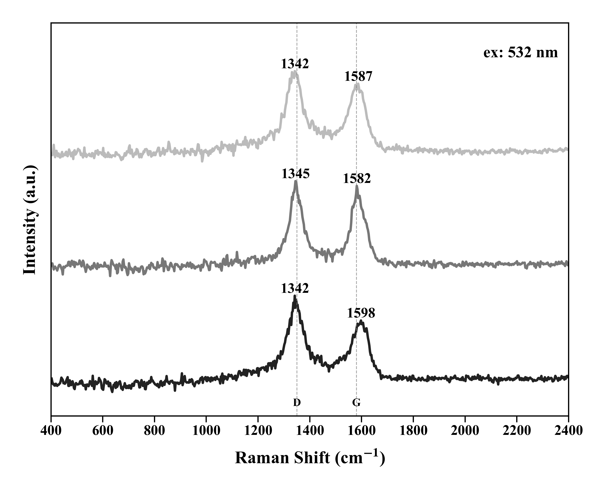
Five evaluators — human users and four frontier LLMs — rate outputs from Ours and four baselines on a 1–5 scale across four spectroscopy / diffraction task types. Ours axis is highlighted in blue; larger area = better quality.
人类用户和四个前沿大模型对 Ours 及四种基线方法进行 1–5 分评分，涵盖四类光谱/衍射任务。 Ours 轴以蓝色高亮显示，面积越大代表质量越高。